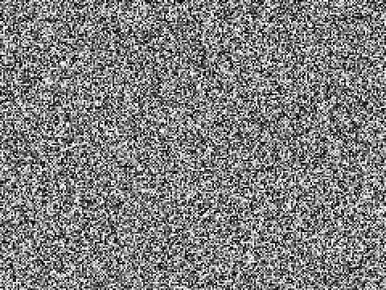

What is interpolation?
It is about getting values between 2 already existing points by providing a value normally called 't' where it is between 0 - 1. As 't' represents the progress from the first value to the second value
It is about getting values between 2 already existing points by providing a value normally called 't' where it is between 0 - 1. As 't' represents the progress from the first value to the second value
Values can be interpolated differently depending on the math behind it. For example, some are interpolated linearly, while others are interpolated cubicly. This can lead to different outcomes despite having the same 't' value.
Interpolation can also differ from methods in terms of the number of values used! This happens when interpolation is done in 2D instead of 1D. Meaning to say 2D interpolation methods such as bi-linear will require 4 values instead of 1! Here is an example of a simple bi-linear interpolation
The math formula calculates the 'distance' b is from a. Then it multiplies that by a percentage t. Then finally it adds that result back to a!
Linear interpolation is really just to get the result between 2 numbers when you enter a 'progress value' known as t which is usually between 0-1 to represent it in percentage. For example, 0.5 just means 50% from the first value to the second!
The formula is actually a bezier formula of the power which allows for control points to manipulate the shape of the curve!
This type of interpolation simply allows you to interpolate on a curve instead of a straight line which can be controlled with a set number of control points!
The formula is just linear interpolation but repeated 3 times
It is doing linear interpolation in 2 dimensions, meaning you linear interpolate 2 values first, and then linear interpolate the result of the 2 values to get your final value!
The algorithm just finds the value closest from your target and outputs that closest value in a list
It simply just finds the number closest to what your chosen number from a list of numbers
The bicubic interpolation formula is just the cubic interpolation formula but repeated 5 times
It is simply doing cubic interpolation in 2 axis, but since each cubic interpolation needs 4 points, you need to interpolate for times in 1 dimension to do one more in the next!
The formula shown is pythagoras theorem for distance as it needs to now deal with diagonal distance for 2D
It is simply doing nearest_neighbour but in 2 dimensions
For simplicity, the formula is the linear sum of derivatives
It basically interpolates derivatives instead of values
Interpolation is used in animation to give that smooth movement you see in animations especially 3D ones. It is also used to animate bones of characters, in animations and games! Some examples include Murder Drones, Zenless Zone Zero and more.

Perlin Noise uses bilinear interpolation in its formula to generate the image shown. Essentially, it takes the values of a point, in a grid, then it interpolates the corners of the grid cell that point is in and output a value between -1 and 1.
Interpolation helps generate curved paths using low Polynomial interpolation! By placing points along a curved line, the object can then follow these points to go in a curved path!